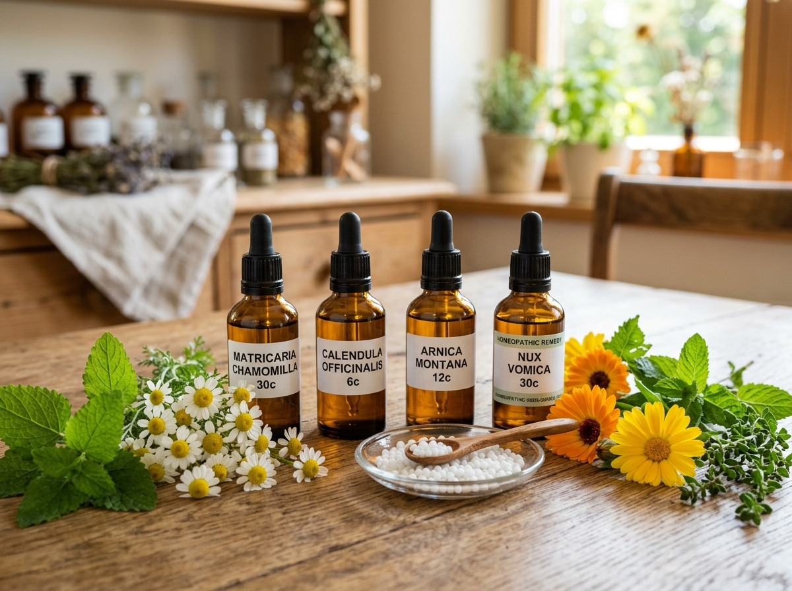
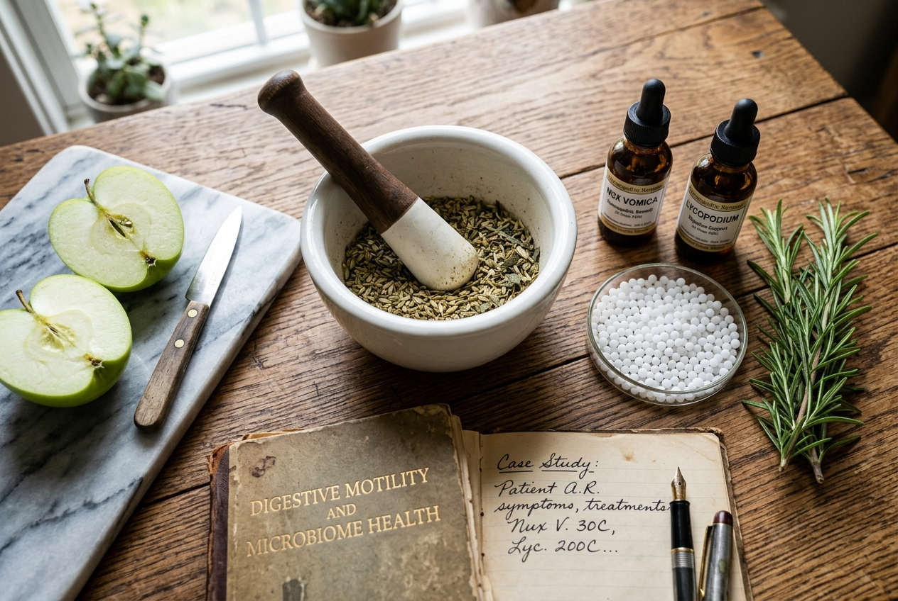

Understanding Constitutional Homeopathy: How Your Unique Vital Force Guides Healing
Why two patients with the same clinical diagnosis receive distinct homeopathic remedies based on mind, body, and individuality.

Why two patients with the same clinical diagnosis receive distinct homeopathic remedies based on mind, body, and individuality.

A clinical look into how suppressing skin eruptions with topical steroids complicates respiratory health, and how homeopathy addresses the root.
How constitutional remedies like Arsenicum Album and Petroleum calm cellular hyper-proliferation, soothe stubborn scaling, and nourish compromised lipid barriers.

Targeting systemic liver drainage, lymphatic detoxification, and hormonal balance to permanently eliminate cystic flare-ups without aggressive chemical peeling.

Breaking the repetitive cycle of antibiotics in early childhood with gentle, pleasant milk-sugar globules that stimulate lymphatic vitality.
How classical remedies calm agonizing teething pain, abdominal colic spasms, and nighttime restlessness in infants safely without sedatives.

Desensitizing hyper-reactive juvenile airways and building lasting resistance against recurrent seasonal allergies, runny noses, and enlarged adenoids.
Discover how emotional tension and psychosomatic triggers disrupt the enteric nervous system, and which remedies restore gut harmony.
How classical remedies calm an overactive evening mind, reset cortisol curves, and restore deep delta-wave sleep naturally without dependence.
Combining biochemic cell salts with whole-food hydration and mindful daily rituals to sustain vibrant cellular energy and mental clarity.
How potentized Allium Cepa, Euphrasia, and Sabadilla desensitize the respiratory tract from pollen hypersensitivity.
How constitutional remedies widen airway diameter, eliminate nocturnal wheezing, and restore effortless breathing naturally.
Targeted protocols to resolve stubborn maxillary congestion, thick mucosal discharges, and facial pressure without steroid sprays.
A compassionate, non-synthetic approach to regulating endocrine cycles and reducing hot flashes naturally.
Safe, non-toxic constitutional remedies to alleviate persistent morning nausea, pelvic ligament pain, and postpartum emotional exhaustion.
Resolving pelvic venous congestion, cyclic cramping, and estrogen dominance naturally through constitutional homeopathic therapeutics.

How constitutional Nux Vomica and Lycopodium regulate gastric motility, heal mucosal inflammation, and eliminate chronic acid reflux.
How constitutional remedies soothe enteric nervous system spasms, relieve severe cramping, and restore calm digestive transit naturally.

Re-establishing normal gastric motility, enzymatic balance, and healthy flora to resolve SIBO, fermentation distension, and food intolerances.

Clinical methodology for modulating hyperactive auto-antibodies, optimizing energy vitality, and resolving chronic systemic fatigue.

How classical constitutional homeopathy resolves post-viral exhaustion, cellular mitochondrial stagnation, and widespread fibromyalgia pain without stimulants or dependence.